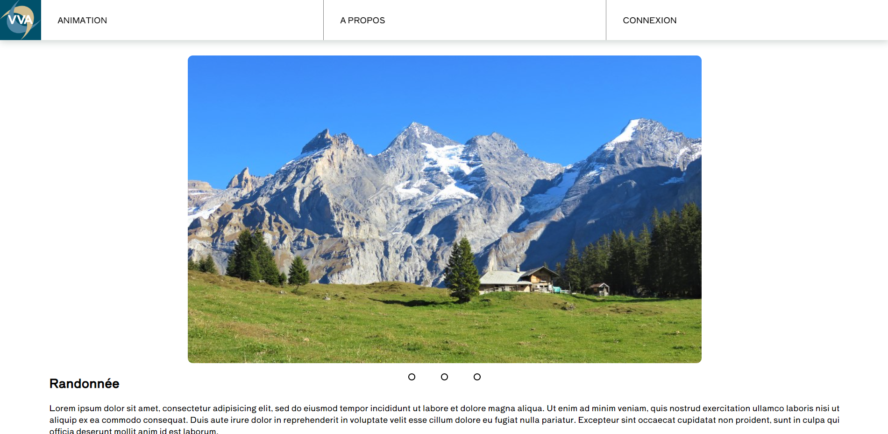
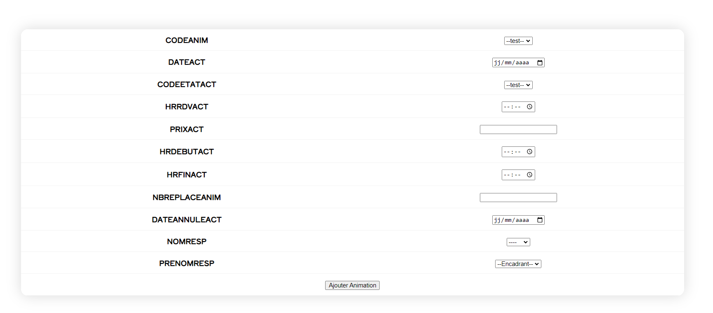
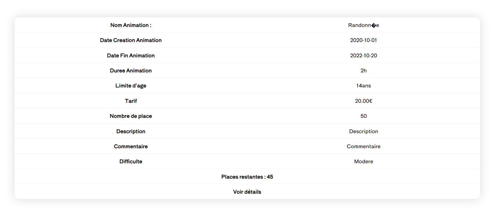
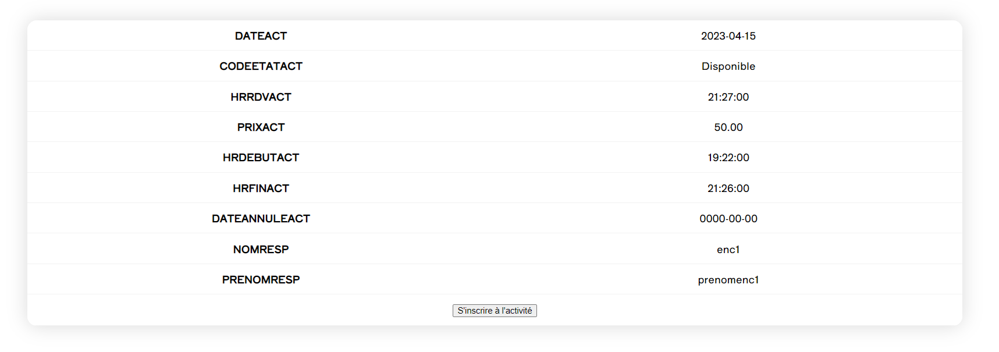

Le projet VVA était notre troisième projet (en inviduel). Dans ce projet, nous devions réaliser le site web d'une chaîne de village de vacance. Il nous était demandé de gérer la connexion d'un utilisateur, afficher une interface différentes en fonction du type d'utilisateur connecté, un encadrant, peut ajouter une animation, une activiter, les modifier, les annuler. Un vacancier quand à lui, doit pouvoir consulter ses animations et activités et pouvoir s'y inscrire et biensûr pouvoir annuler son inscription.

Ajout d'une animation

Consulter les activités

Inscription à une activité
